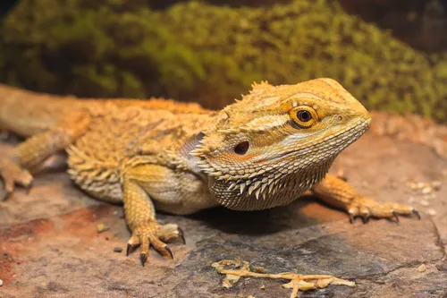

알거스 모니터

종 설명
초보자를 위한 가이드
비어디 드래곤은 성체가 되면 40~50cm까지 자라므로 처음부터 넉넉한 공간을 준비하는 것이 좋습니다.
사육장 크기: 성체 기준 최소 3자(가로 90cm), 권장 4자(가로 120cm) 이상의 사육장이 필요합니다.
온도 구배 (핫존과 쿨존): 사육장 한쪽은 뜨겁게, 반대쪽은
시원하게 만들어 스스로 체온을 조절하게 해야 합니다.
바스킹 스팟 (핫존): 38°C ~42°C (소화를 위해 강한 열을 쬐는
곳)/쿨존 (시원한 곳): 26°C ~ 29°C
UVB 조명 (필수): 야생의 강한 햇빛을 대체할 UVB 10.0(또는 T5)
조명이 필수입니다. 부족하면 뼈가 녹는 대사성 골질환(MBD)에 걸립니다.
바닥재: 새끼(유체) 때는 모래를 삼켜 장이 막히는 '임팩션' 위험이
큽니다. 키친타월, 신문지, 파충류 전용 매트, 또는 타일을 추천합니다.
베이비~아성체 : 공충 80% : 채소 20% 귀뚜리,밀웜,치커리,청경채
중성체~성체 : 곤충 20% : 채소 80% 치커리,청경채,애호박,상추
수분 공급과 온욕: 비어디 드래곤은 고여있는 물을 잘 보지
못합니다. 일주일에 1~2번, 사람 손을 넣었을 때 미지근한 정도(30~35°C)의
물에 10~15분간 온욕을 시켜주면 수분 보충과 탈피, 배변에 큰 도움이
됩니다.
핸들링: 겁이 많지 않은 종이라 손 위에서 얌전히 잘 있습니다.
다만, 처음 집에 데려왔을 때는 1주일 정도 새로운 환경에 적응할 시간을
준 뒤, 하루 5~10분씩 천천히 손에 올려놓으며 교감을 시작하세요.
주의할점
칼슘 부족과 MBD:비어디 드래곤에게 가장 흔하고 치명적인 질병은
뼈가 약해지고 휘어지는 MBD(Metabolic Bone Disease)입니다.
유형별 칼슘 급여: 자라는 성장기(베이비~아성체)에는 주 3~4회,
성체는 주 2~3회 먹이에 칼슘 가루를 묻혀서 줘야 합니다.
절대 금지 채소/과일:시금치(칼슘 흡수 방해),아보카도(독성
있음),감귤류(산성이 강해 위장 장애 유발),야외 곤충 금지
높은 습도 금지 :사육장 내부 습도는 30%~40% 정도의 건조한 상태를
유지해야 합니다.
추천 매장
- 전문 파충류샵 방문 추천
- 개체 상태와 먹이 반응 확인 후 구매
- 사육장 세팅 후 분양 권장